数学家和主厨唯一要做的事情就是解决问题。对两者而言一个更重要的活动是创新。主厨会创造出新的，有时是极其美味可口的菜肴。数学家创造出新的，有时是令人着迷的数学结构。
有人可能会预期数学家和主厨在如何创新方面将会有本质上的区别。但是，就像解决问题一样，他们的创新模式是相同的。其中之一就是融合。将两个已有的旧事物放在一起，有时会有新事物产生。
烹饪方法的融合
烹饪方法在创世之初就在被融合。两种文化无论何时相遇，风味、食材、烹调技法都会被交换，这些会随意、自然而然地发生。
有时，其中一方对交换的结果比另一方更加激动、兴奋。美国外来移民群体创造出的菜肴（中国菜、意大利菜、墨西哥菜等）是被除掉原汁原味特性的变体，但是它们极大地丰富了美国人的餐盘。
有时交换融合的结果大于各部分之和。墨西哥菜就是一个很好的例子。它是美国本土与西班牙烹饪方法高度结合的产物。
我喜欢将菜式A的技术与菜式B的风味相结合这种创意。我最常见到的这种结合中A是欧洲文化，而B是亚洲文化。但我有一些使其向更好的方向转变的想法。这就是其中一个：它将中国菜的烹饪技术与意大利风味相结合，这两种菜式会产生交集是因为它们都喜欢面条。
黄花烟锅贴[55]
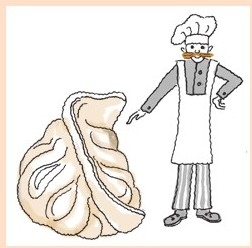
面皮的制作方法：
2½杯面粉
1¼杯开水
将水打入面粉中同时快速搅拌。到无需搅拌时开始揉面，视需要补加面粉。但是要注意，面很烫。直到生面团变得光滑时停止揉面。将生面团包裹在保鲜膜中，醒几分钟。
馅料的制作方法
2个蛋黄
340克全奶意大利乳清干酪
110克分别切碎的意大利熏火腿、摩泰台拉香肚和马苏里拉奶酪
2汤匙新磨碎的帕玛森乳酪
依个人口味准备新磨的黑胡椒粉
烹饪方法
食用油
热水
带盖煎锅
取出蛋黄，打入乳清干酪，然后加入剩下的食材。
生面团取，分成6份，将每一个都擀成薄圆饼，直径大概3～4英寸。在圆面饼上放1～2汤匙馅料，对边相接包裹住馅料，封住口。剩下的面团依此法做完。
煎锅内放薄薄一层食用油，加热。变热后将6个饺子放在煎锅内，不加盖，直到饺子底部变色（很快就会变焦），然后锅内倒入几大汤匙水，盖上锅盖。加进来的水会沸腾，将馅料蒸熟，并被面皮吸收。
大约2分钟后，开盖，继续烹饪，直到锅贴出现可爱的焦褐色。出锅，再加入油，继续烹饪剩下的饺子。
说明：
·锅贴就像大的油炸意大利饺，只要馅料和面皮的比例相称，它好像也属于意大利菜。
·当然，你不希望饺子粘在煎锅上。这时一个不粘锅就很有用了，我用的就是。但是锅贴比聚四氟乙烯（不粘锅涂层）出现得要早，所以一个普通优质煎锅也能用。
·我在炉子旁边放了一壶热水。有时我会加水过多，超出面皮能够轻松吸收的量，那么我必须将超出的水汽化掉。
·其他很多种馅料都很好吃。我试过螃蟹、龙虾，还试过米熏鸭。
我曾在菲律宾住过几年，非常开心。我尤其喜欢那儿的一种午后点心（小吃）帕里淘。这是一种手工米粉，米粉做成薄而细长的圆盘。吃的时候撒上糖和烤熟的芝麻，好吃又有嚼劲。
当我在寻找不含麸质的比萨（第一章）时，我曾想过帕里淘是否可以。如果你喜欢下面这道菜肴，那它就算有用了。这道菜可以说是菲律宾菜、意大利菜和犹太菜的结合体。
洛克西淘[56]
4汤匙黄油
¾杯多脂奶油
230克燻鲑鱼或者切成薄片的冷熏三文鱼
新磨的黑胡椒
2杯黏（糯）米粉或者更多
1杯水
柠檬片
黄油融化，加入奶油，加热直至浓稠变厚。关火。
将1杯水和2杯黏米粉混合在一起。你可能会觉得黏稠而又一团乱。一点点地再加入米粉直到面团黏合度刚刚好，并且用手就可以将它们团成球。这是一种令你惊喜的东西，有一点潮湿气，可能会让你想起弹性橡皮泥。
将三文鱼片切成小块，大概一元硬币大小。
烧一壶水。水开始沸腾时，取一点黏米，团成直径大概¾英寸的球。用你的手指，将球压成薄而细长的圆饼。将圆饼放入沸水中。继续做圆饼，放入水中。你需要给自己的手指覆上一层干米粉。过一会儿，煮沸的圆饼会浮到沸水表面。这时就算做好了。将圆饼舀出，沥干水分后放入酱汁中调味。不时搅拌防止圆饼彼此粘连在一起。
这个处理过程会需要一段时间。最后将三文鱼加入酱汁中，搅拌均匀。上面撒上磨细的胡椒，吃时配柠檬片。
数学上的融合
数学领域中的融合一直都有。其中一个著名的例子就是微积分学。微积分学的本源问题是作为几何学问题被思考的：计算面积、构建切线。17世纪时，人们用代数学来解决这些问题，对此不是所有人都开心接受的——这难道不像我们对待食物、菜肴吗？有人认为用代数学会玷污几何学的纯洁（就像用搅拌机取代研钵和研杵去做香蒜沙司，不再将各种配料放在一起手工捣碎）。[57]你可能会觉得能让我们获得成功的方法应该会被普遍认可的，但是数学家也关心美学。
拓扑学产生于19世纪，是一个完完全全的融合体。它从几何学对象开始， ；但是忽略了距离和角度，运用分析学研究对象。后来，拓扑学引入了代数学、集合论和图论。如今，几乎触及数学的每一个分支领域。
让我来告诉你弗莱德和我在第十章和第十八章中介绍的盒子的融合是如何产生的。
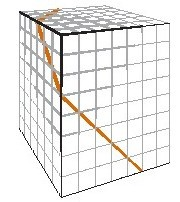
用盒子进行研究的灵感来自矩形（第六章和第八章）。
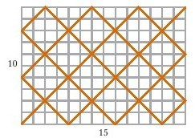
这些都是几何学，但是矩形涉及数论。如果矩形的边有一个公因数（例如，它们不互素），这样你会发现一个环状图形，是一条不碰触任何角的闭合的路径。
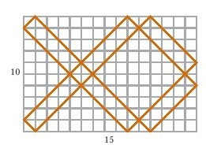
如果它们没有公因数（互素），每一条对角线
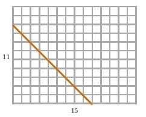
都不可避免地通向一个角。
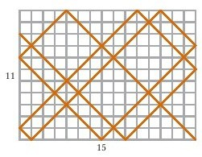
那如果是盒子会怎么样？如果盒子的尺寸维度有一个公因数，就会形成一个环，这是真的。
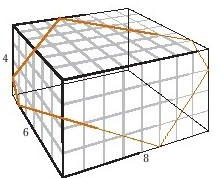
但即使不存在公因数，也会有一个环。
那接下来会怎么样？弗莱德和我决定将数论和几何学融合在一起。我们认为这可能是不同类型的“互素”，也就是说我们也许能够定义出“盒子互素”。
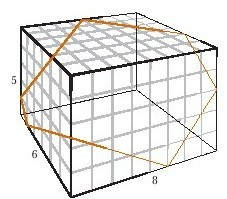
定义：如果a×b×c的盒子没有形成一个环，那么三个正整数a、b、c为盒子互素。
这个概念说的是“盒子互素”与“互素”类似，会告诉我们一些关于盒子的信息。
我们取得了一些成功。这是示例。数论中有一个简单的方式可以找出两个数字是否互素。你要做的是任取两个数
42 33
用较大的数减去较小的数
42 33
9 33（42-33=9）
继续下去，一直用较大的数减去较小的数，
42 33
9 33（42-33=9）
9 24（33-9=24）
9 15（24-9=15）
直到减法的结果不会再有改变时停止。
42 33
9 33
9 24
9 15
9 6
3 3
3 0
3 0
3 0
如果你在1和0出现时停止减法，则最开始的两个数互素，否则就不是。在我们所说的这个例子中，42和33就不互素，因为减法终止在3和0。（3其实是42和33的最大公因数）。
再一个例子：42和31互素。
42 31
9 31
9 22
9 13
9 4
5 4
1 4
1 3
1 2
1 1
1 0
这个方法被称为欧几里得算法。
那盒子和三维尺寸会如何呢？我们花了一些时间，但是我想我们已经知道怎么做了。给出三个数字，较大的数字减去两个较小的数字。例如，如果盒子的外形尺寸是9、26、15。
9 26 15
9 2 15（26-15-9=2）
继续减
9 26 15
9 2 15（26-15-9=2）
9 2 4（15-9-2=4）
用欧几里得算法继续直到结果再无变化。
9 26 15
9 2 15
9 2 4
3 2 4
3 2-1
（继续减，即使数字变成负数！）
146证明与布丁
9 26 15
9 2 15
9 2 4
3 2 4
3 2 4
3 2-1
2 2-1
2 2-1
1 2-1
1 2-1
这里出现的负数似乎很荒谬，但是坚持下去。如果你能以
1、0和0
或者 1、1和-1
或者 1、2和-1
结束计算，我们就能证明[58]。
如此一来，最初的3个数字组合（9、26、15）就是互素，也就是说会有环形回路出现。例如，在尺寸为9×26×15的盒子中，任意一条对角线
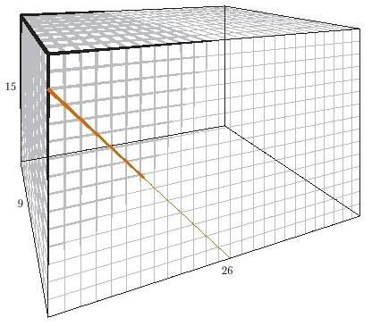
最终会碰到一角。
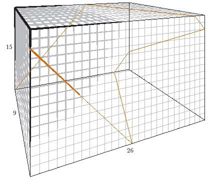
注意，对于尺寸为5×6×8的盒子来说，这个方法
5 6 8
5 6-3
5 4-3
4 4-3
3 4-3
说明也会出现环形回路（正如我们在前几页看到的一样）。
这是数论和几何学的一个奇怪融合！有很多问题需要解答。给出了盒子的尺寸，那路径的长度是多少？有多少个环形回路呢？
如果你想玩一玩这个，我们有一个可以在纸上玩的方法。我们假设你想试试5×6×8这个尺寸的盒子，那么先画出底，即一个5×6的矩形。
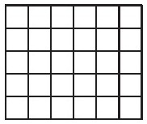
要探究从一角引出的路径，你需要沿着底部开始。
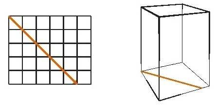
当你走到一条边时，再走8步（盒子的高度），绕着这一边（你正在盒子的侧面攀爬）。
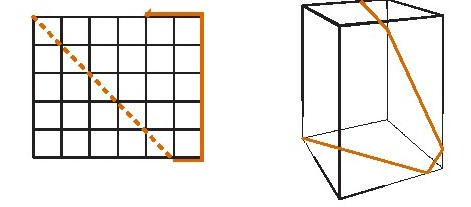
现在你在盒子顶部，可以继续走，穿过顶部……
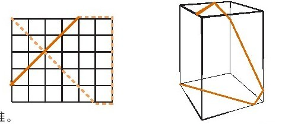
以此类推。
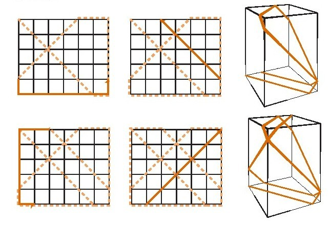